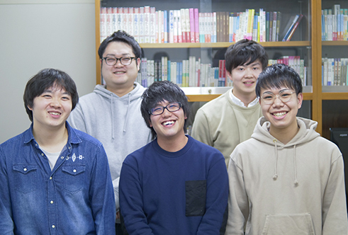

TOPIC注目トピック
オフィス・トゥー・ワン所属タレント・作家・音楽家らが今気になっていること、
これから挑戦していきたいことを「注目トピック」として紹介しています。
所属タレント・作家・音楽家の一覧は、「プロフィール一覧」からご覧ください。
NEWS最新情報
-
江上 剛
テレビ2/16（日）21:00～23:09 テレビ朝日ドラマ第4弾「庶務行員 多加賀主水」江上剛が原作...
-
森田 豊
ラジオ2/3（月）～7（金）6:00～ ニッポン放送「飯田浩司のOK！Cozy up！」出演
-
江上 剛
テレビ2/2（日）11:30～ BS日テレ「夢のメディ神殿2020」出演
-
森田 豊
ラジオ2020年 4月19日(日)『奥田弦ジャズコンサート 夢弦JAZZ feat.武嶋聡』
-
イーデス・ハンソン
テレビ2/16（日）21:00～23:09 テレビ朝日ドラマ第4弾「庶務行員 多加賀主水」江上剛が原作...
-
森田 豊
ラジオ2/3（月）～7（金）6:00～ ニッポン放送「飯田浩司のOK！Cozy up！」出演
-
江上 剛
テレビ2/16（日）21:00～23:09 テレビ朝日ドラマ第4弾「庶務行員 多加賀主水」江上剛が原作...
-
森田 豊
ステージ2/3（月）～7（金）6:00～ ニッポン放送「飯田浩司のOK！Cozy up！」出演
-
神 太郎
リリース2020年1月8日〜13日
シアターXカイ 提携公演 玄狐 旗揚げ公演
『咲き誇る花たち』 -
森田 豊
ラジオ2019年12月25日発売
新潮社『清算ー特命金融捜査官ー』 -
久米宏
WebKume＊Net 最新動画配信
-
インフォ
メディア作家5名 新規所属のお知らせ
REGULARレギュラー出演情報
WHAT’S OTOオフィス・トゥー・ワンとは？
-
クリエイティブな
人材が豊富オフィス・トゥー・ワンには、作家・作曲家・作詞家・プランナーなどクリエイティブな才能溢れる人材が豊富です。
プロフィール一覧を見る -
挑戦の精神
人の才能を活かすために、常に新しい発想を大切にしながら、企画・制作に仕掛けを施しています。所属タレントや作家達と共に、時代の先を見据えた新たな企画開発を通して、更に一歩を踏み出します。
-
様々な専門分野の
知識人が多数専門分野に関する講演会の依頼もご依頼ください。音楽家によるコンサートやタレントによるイベントMCも承ります。
講演会・コンサート情報を見る
LECTURE & CONCERT講演会・コンサート
ご希望に沿ったスペシャリストをご提案
講演会、トークショー、コンサート、イベントMC、落語など、ご紹介分野は様々です。
催事主旨に合致するスペシャリストをご提案いたします。
催事主旨、ご予算、日時等、ぜひお気軽にお問い合わせください。
RECRUIT & APPLICATION社員採用・所属希望の応募
-
-
 APPLICATION所属希望の応募
タレントはもちろん、専門知識を持った文化人や、クリエイティブな才能を持ったメディア作家、音楽家、作詞家など、オフィス・トゥー・ワンは才能溢れる人材を随時募集しています。
所属希望の応募を見る